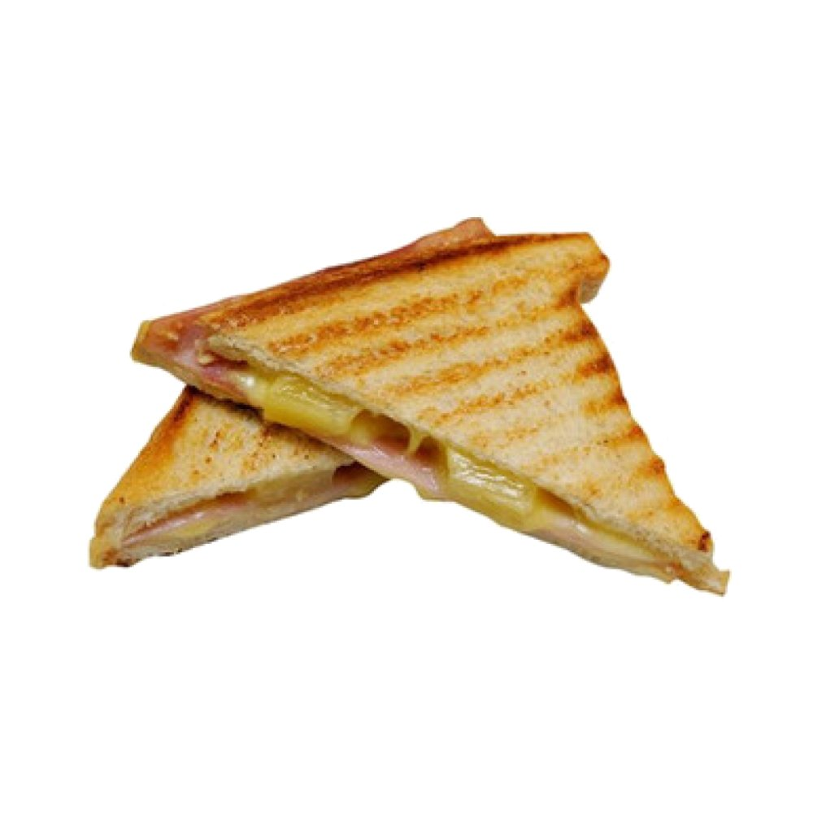

tosti

Description
The Tosti is the ultimate Dutch comfort lunch. While it may look like a simple grilled cheese sandwich, its beauty lies in its crispy, golden-brown exterior and perfectly melted interior. It is a staple in almost every Dutch cafe and household.
Traditionally made with white bread, ham, and Gouda cheese, it is pressed in a sandwich iron until the cheese is gooey. It is almost always served with a side of "curry saus" or ketchup for dipping, making for a quick and satisfying meal.
Ingredients
- 2 slices of white or whole wheat bread
- 2 slices of Dutch Gouda cheese
- 1-2 slices of high-quality ham
- Butter (for the outside of the bread)
- Curry ketchup or regular ketchup (for dipping)
Steps
- Assemble the Sandwich: Place one slice of cheese on a piece of bread, followed by the ham, and then the second slice of cheese. Top it with the second piece of bread.
- Butter the Bread: Lightly spread butter on the outside surfaces of both slices of bread to ensure a golden, crispy finish.
- Heat the Press: Preheat your sandwich press (tosti-ijzer) or a frying pan over medium heat.
- Grill: Place the sandwich in the press or pan. If using a pan, press down firmly with a spatula.
- Flip and Melt: Cook for 3-5 minutes until the bread is golden brown and the cheese has completely melted. If using a pan, flip halfway through.
- Serve: Cut the tosti diagonally into triangles and serve hot with a side of curry ketchup.